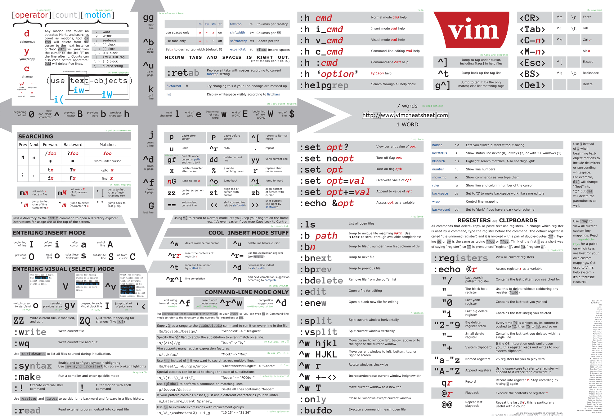

对于经常使用命令行终端的同学来说，Vim 是必备良品，它不仅仅是一个编辑器，更是一个强大的 IDE。
Vim安装及更新
截至目前(2016.10.25)Mac自带的Vim版本还是7.3版本的，而最新版本的已经是8.0了，执行下面命令更新到最新版本。
上面命令会将 Vim 装到 /usr/local/bin 下面，为了让 brew 安装的软件覆盖系统自带的，需要在 PATH 增加 /usr/local/bin 在 /usr/bin 前面，修改 .bash_profile/.zshrc：
export PATH="/usr/local/bin:/usr/local/git/bin:/usr/bin:/bin:/usr/sbin:/sbin"
然后执行下面命令让配置文件生效
如果install命令提示版本已安装，可以使用upgrade命令安装升级至最新版本
Vim配置
关于 Vim 的配置网上有很多人分享出来，对于刚接触 Vim 的新手没有必要直接拷贝，下面提供最基本的几个配置项供参考。
Vim 的配置文件 .vimrc 一般放置在 /Users/用户名/.vimrc ，若没有这个文件，创建即可，下面修改的就是 .vimrc 这个文件（"表示注释）。
上面的配置文件对于基本使用是够的了，开启了语法高亮、显示行号、自动缩进等功能，更详细的配置可以点击 这里 查看我们组内一位VIM高手的配置，对于想进一步使用 Vim 的可以继续往下看如何装插件让 Vim 变得非常强大
Vim插件
直接通过 vimrc 项目装上常用的插件。
Vim手册
看不清楚可以新窗口打开！
